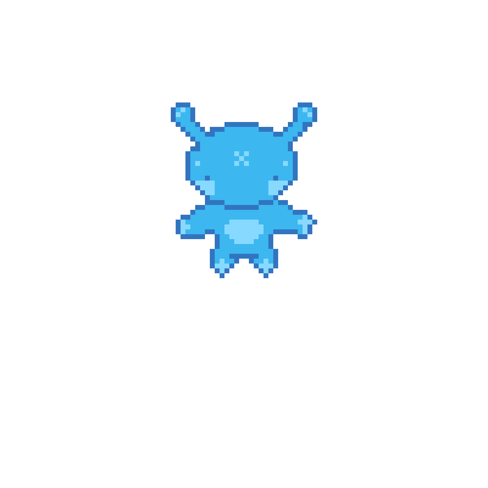
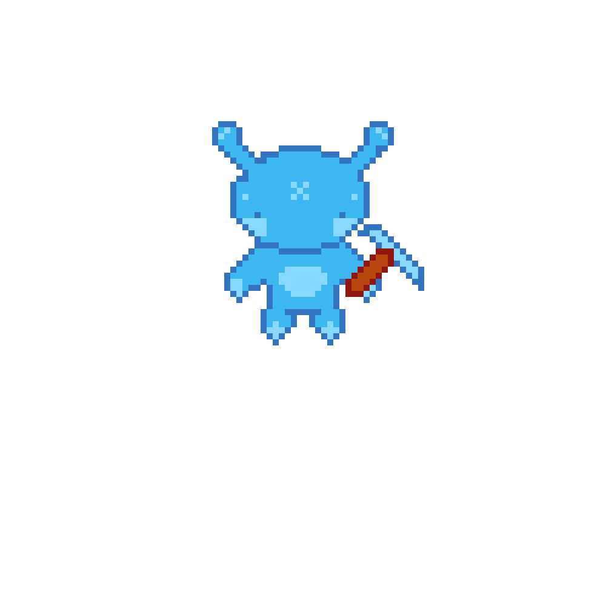
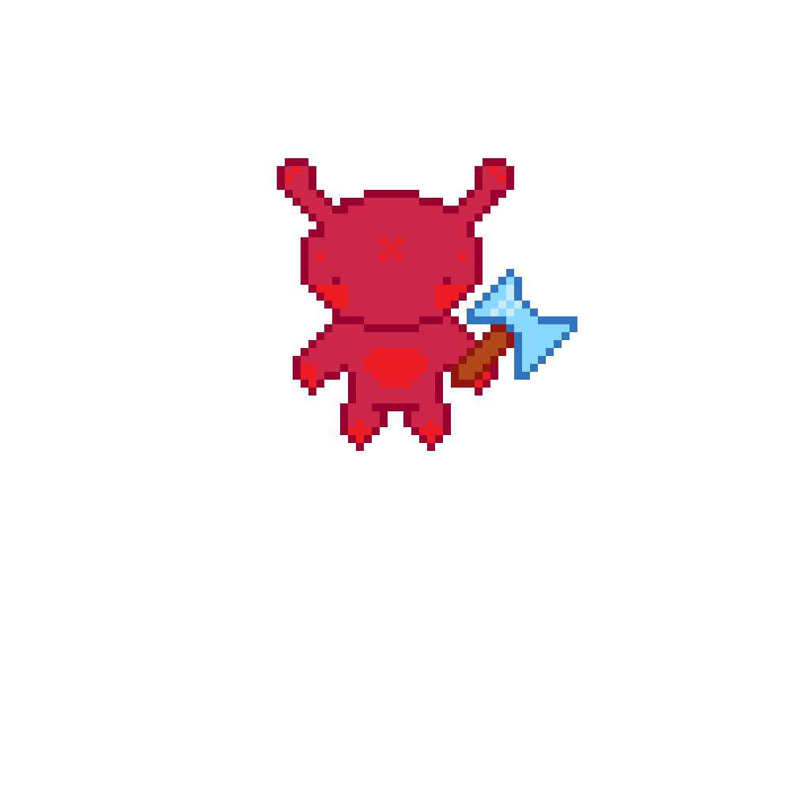
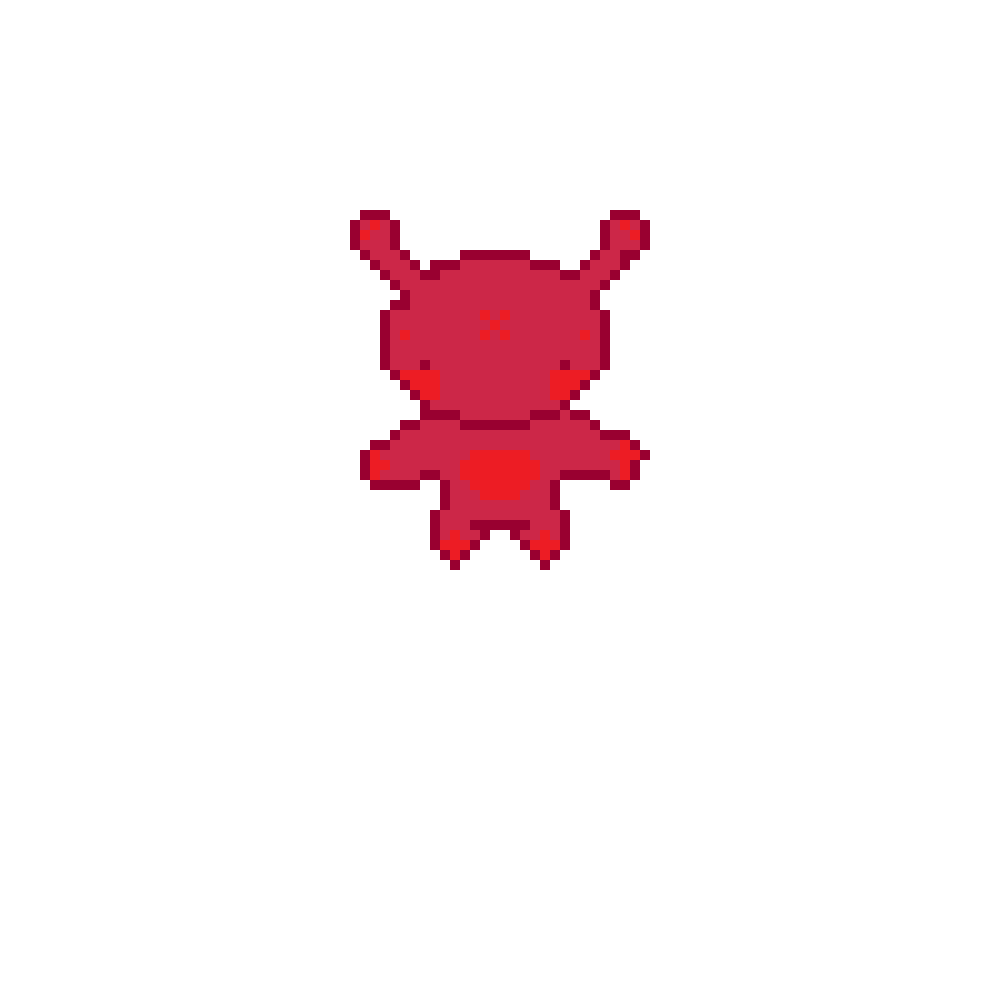

Stone Route
Blue-only terrain.
2D Co-op / Time Management / Resource Gathering
Two specialized aliens, one relentless blueprint ticker, and one Omni-Crafter standing between chaos and a perfect star rating.



Blue-only terrain.
Both aliens craft and deliver here.

Ore, coal, and stone for Red.
Core Gameplay Loop
Break raw nodes with axes and pickaxes to generate portable building resources.
Move materials between isolated islands fast enough to keep the assembly line fed.
Convert basics into sticks and pebbles before sending finished ingredients to the Omni-Crafter.
Read the top-screen ticker, build the exact blueprint, and beat the draining timer for a higher score.
Tri-Island System
Alien Assembly Line is built around separation. The void between islands forces players to specialize, communicate, and keep materials moving without wasting seconds.
Dedicated to stone materials and terrain only the Blue Alien can traverse.
Holds mineral routes for stone, ore, and coal, accessible only to the Red Alien.
Shared crafting ground containing the Omni-Crafter, delivery zone, and the order screen.
Mechanics & Controls
Crafting Board
3 sticks + 3 pebbles
3 wood + 1 stone
4 wood + 2 pebbles
4 stone + 2 sticks
2 wood + 2 stone
3 stone + 3 sticks
Technical Goals
Why It Works
No player can finish orders alone. The map layout, recipe dependency, and shared crafter create constant coordination pressure in both local and online co-op.
Playable Embed